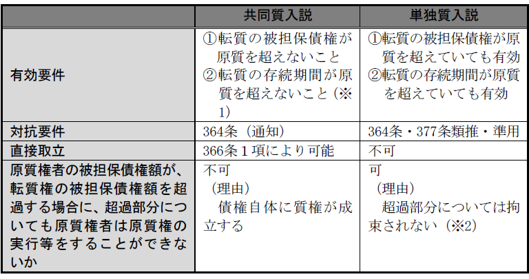

第３編 担保物権
第３章 質権
第１節 総説
：債権者が債権の担保として債務者又は第三者（物上保証人）から受け取った物を占有し、債務の弁済を間接的に強制するとともに、弁済されない場合にはその物の売却価額から優先弁済を受けることのできる約定担保物権
付従性・随伴性・不可分性（350条、296条）・物上代位性（350条、304条）を有する。
成立要件は、①質権設定の合意（設定契約）、②目的物の引渡しである。
1. 当事者
質権は、質権者と質権設定者（債務者又は第三者）の質権設定契約（物権契約）により設定される。
｢第三者｣とは、債務者のために自己の財産を質権の目的物として提供する｢物上保証人｣であり、債務は負わず責任のみを負担する。
2. 質権の目的物－譲渡可能な物であることを要する（343条）。
3. 被担保債権－制限がない。
1. 要物契約性（344条）
質権設定契約は要物契約である。質権設定契約を要物契約としたのは、①質権の存在を公示するとともに、②質権設定者から目的物を奪うことによって間接的に債務の履行を強制するという留置的効力を発揮させるためである（通説）。
「引渡し」には、現実の引渡し（182条１項）、簡易の引渡し（182条２項）、指図による占有移転（184条）は含まれる。
2. 占有改定の禁止（345条）
占有改定（183条）は｢引渡し｣には含まれない。
1. 被担保債権の範囲（346条）
「元本、利息、違約金、質権の実行の費用、質物の保存の費用及び債務の不履行又は質物の隠れた瑕疵によって生じた損害の賠償」である。
抵当権の被担保債権の範囲（375条）と比較すると著しく広い。なぜなら、抵当権と異なり、質権者が目的物を占有するため、後順位の質権者が登場することがほとんどなく、また、質物が第三者に譲渡されることも少ないため、担保価値の全部を質権者が把握していると考えられるからである。
2. 留置的効力（347条）
質権者は、被担保債権の弁済を受けるまで、目的物を留置することができる（347条本文）。ただし、質権に優先権を有する債権者に対しては対抗できない（347条ただし書）。この点で留置権と異なる。
留置的効力により質権者は債務者に間接的に債務の履行を強制することができる。
なお、使用収益をしない旨の定めのある不動産質権は、競売において消滅するとされるので、この場合は最優先順位を有していても、留置的効力を主張することができない（347条ただし書）。
3. 優先弁済的効力
優先弁済を受ける方法は目的物によって異なるため後述する。
4. 果実収取権
質権者は、質物から生ずる果実を収取し、他の債権者に先立って、これを自己の債権の弁済に充当することができる（民法350条、297条）。
第２節 動産質
動産質：動産を目的として設定される質権
動産質権の対抗要件は質物の占有である（民法352条）。
代理人による占有（間接占有）も含む。
占有の継続は対抗要件にすぎず、占有を喪失しても質権が消滅するわけではない。
質権を要物契約とし公示機能と留置的効力を実現しようとする趣旨を貫くため質権設定者による代理占有を禁止する（345条）。
1. 対抗することができない「第三者」
対抗することができない「第三者」とは、質権設定者・債務者以外の者である。よって、質権者の占有を離れた目的物が設定者のもとにあるときは、質権に基づいて返還請求できる。
2. 占有を喪失した場合
(1) 第三者に目的物を奪われた場合
第三者に目的物を奪われた場合は、対抗力を失うから質権に基づく返還請求はできず、占有回収の訴え（200条）によるのみである（353条）。質権者が占有を失えば質権をもって第三者に対抗することはできない（352条）から、物権的請求権も否定される。
質権設定者に対しては、詐取･遺失の場合でも質権に基づく返還請求ができる。質権設定者に対しては対抗力の問題は生じないからである。
(2) 質権設定後、目的物が任意に設定者に返還された場合の質権の効力
対抗力喪失説（大判大５.12.25）
質権そのものは消滅せず、単に対抗力を失うにすぎない。
質権の本質は、優先弁済的効力であり、留置的効力を重視すべきではない。
※なお、登記を対抗要件とする不動産質権にあっては、対抗力も失わない。
1. 目的物の使用・収益の可否
不動産質権と異なり、設定者の承諾がなければ認められない（350条、298条２項本文）。
2. 善管注意義務等
298条が準用されることにより、動産質権者は善良な管理者の注意をもって質物を保管し、債務者の承諾がなければ質物の使用（保存に必要な使用を除く）、賃貸又は担保設定をすることができない。これに反する場合は、質権の消滅請求を受け得る（350条、298条）。
1. 優先弁済を受ける方法
(1) 競売（民執法190条、192条）
(2) 簡易な弁済充当
動産質権者が債権の弁済を受けないときは、｢正当な理由｣がある場合に限り、鑑定人の評価に従い質物をもって直ちに弁済に充当することを裁判所に請求することができる。この場合、質権者はあらかじめその請求をする旨を債務者に通知しなければならない（354条）。
質権実行の費用倒れを防止する趣旨である。
2. 流質契約の禁止（349条）－優先弁済的効力の特則
(1) 流質契約の意義
：質権設定者が質権設定契約あるいは弁済期前の契約により、質権者に弁済として質物の所有権を取得させ、又は法律の定める方法によらないで、質物を処分することを約する契約
債権者が債務者の窮迫に乗じて債務額に比べ不相当に高価な質物について流質契約を結ばせるおそれがあるとして、禁止されている。
もっとも、弁済期後にこのような契約をすることは許される。
なお、債務者が任意に質物をもって代物弁済することができるという契約は、債務者自身にその決定が委ねられているので、弁済期前に定めた場合も有効とされる（大判明37.４.５）。
(2) 強行法規性
349条は強行規定であり、これに反する流質契約は無効となる。
質権設定契約自体は原則として有効に成立し、流質契約のみが無効になる（通説）。
(3) 流質の認められる場合
①被担保債権が商行為によって生じた場合（商法515条）
②営業質屋の場合（質屋営業法19条）
物権に共通の消滅原因、担保物権に共通の消滅原因によるほか、動産質権に特有の消滅原因として、承諾を得ない質物の使用・賃貸・担保設定（350条、298条３項）などがある。
第３節 不動産質
不動産質：不動産を対象とした質権
不動産質は、動産質とは異なり、｢使用及び収益｣（356条）を債権者に与えることを本体とした担保（用益質）であることにその本質がある。
抵当権の規定の準用がある（361条）。
1. 効力要件
不動産質権も、効力が生じるためには設定契約と目的物の引渡しが必要である（344条）。
2. 対抗要件
対抗要件は｢登記｣である（177条）。
1. 意義
質権の存続期間は、10年を超えることができない。これより長い期間を定めたときでも、その期間は10年に短縮する（360条１項）。10年の存続期間を経過すると、質権そのものが消滅する。その結果、使用収益権を失うのみならず、競売権も失う。
この期間は更新することができるが、更新時より10年を超えることはできない（360条２項）。
本条は、永小作権の期間に関する278条や、買戻しの期間制限の580条と同趣旨の規定である。すなわち不動産を長期にわたって他人の手に委ねておくことは不動産を荒廃させるとの考慮に基づき、不動産質権の存続期間を定めるものである。他の質権にはない制限である。
存続期間の定めがない場合でも、質権が不成立となるのではなく設定のときから10年間は存続する（大判大６.９.19）。
2. 被担保債権の弁済期が不動産質権の存続期間経過後に到来する場合
債務者が期限の利益を喪失しない限り、質権者は優先弁済を受ける機会はない。
3. 弁済期が存続期間の満了より早く到来する場合
弁済期後、存続期間の満了までに質権を実行すべきであり、これを怠れば無担保債権となる。
4. 弁済期と存続期間の満了が同時の場合
期間満了により直ちに質権が消滅し、優先弁済権を失うというのは不合理である。そこで、弁済期到来＝期間満了の後、遅滞なく競売の申立てをすれば質権者は、優先弁済を受けることができると解される。
1. 効力の及ぶ範囲
原則として、不動産質権は、目的地上に存する建物を除き、目的不動産に付加して一体となっている物（「付加一体物」）に及ぶ（361条、370条）。もっとも、不動産質権は使用収益権があるので、その効力は果実収取権にも及ぶ（356条）。
2. 物上代位（350条・304条）
物上代位も認められるが、上記の通り、不動産質権には、果実収取権があるので、不動産質権者は目的不動産を賃貸して賃料を収取することができるので、あまり賃貸による物上代位を論ずる意味はない。
3. 優先弁済的効力
不動産質権の実行方法は、抵当権規定が準用されることから（361条）、担保不動産競売に加えて担保不動産収益執行も可能である。
簡易の弁済充当（354条）は許されない。
1. 使用収益の態様
(1) 不動産質権者による使用収益
不動産質権者は、設定行為に別段の定めがない限り（359条）、目的物の用法に従い使用・収益できる（356条）。また、自ら使用収益することができるのみならず、第三者への賃貸・用益物権の設定もできる。
(2) 果実収取権
不動産質権者は、不動産の用法に従って生じた天然果実･法定果実を収取することができる（民法350条、297条）。
2. 質権者の負担
(1) 質物（不動産）の管理費用その他の不動産上の負担（固定資産税等）を負う（357条）。
質権者が用益権を有することから、その反面として必要な管理費用等の負担を負う。
(2) 利息の請求は不可（358条）
目的不動産の収益による利益は、被担保債権の利息に相当するものとみられるため、不動産質権者は原則として被担保債権の利息を請求できないとした。
上記(1)及び(2)は、別段の定めをすることもできる（359条）。
動産質権と同様の消滅原因のほか、10年の存続期間が満了する場合があり、また、代価弁済（361条、378条）、質権消滅請求（361条、379条）により消滅する場合がある。
なお、存続期間の経過による不動産質権の消滅は、登記を抹消しなくても第三者に対抗できる（大判大６.11.３）。
第４節 権利質
Ⅰ 意義
権利質：債権、株式、無体財産権などの財産権を目的とする質権
権利質も他の質権と同様、価値把握権としての性質を有する。これらの財産権は抵当権では担保とすることができないので、質権が重要な役割を果たす。
Ⅱ 債権質
1. 設定契約
現に発生していない債権を目的とすることもできる（364条かっこ書参照）。
債権質の設定は、下記(1)及び(2)以外の場合、設定契約により効力を生じ、債権証書が作成されていても、交付は効力要件ではない。
(1) 指図証券の質入れは、その証券に譲渡の裏書をして質権者に交付しなければ、その効力を生じない（520条の７、520条の２）。
(2) 記名式所持人払証券の質入れは、その証券を質権者に交付しなければ、その効力を生じない（520条の17、520条の13）。
2. 対抗要件（364条）
第三債務者への通知、又は第三債務者の承諾（364条、467条）か債権譲渡登記ファイルによる（動産債権譲渡特例法14条１項、４条）。
1. 効力の及ぶ範囲
(1) 利息債権
質入債権が利息付である場合、その利息は「果実」（350条、297条）に当たるので、質権者はこの利息を直接取り立てて優先弁済に充てることができる（366条、350条、297条）。
(2) 不可分性
被担保債権の全部の弁済を受けるまで質入債権の全部に及ぶ（350条、296条）。
(3) 物上代位（350条、304条）
(4) 担保権を随伴する場合
質入債権についての保証債務や担保物権も、債権質の効力が及ぶ（随伴性）。
ただ、質権・抵当権等の上に債権質の効力が及ぶ場合は、質権においては目的物の引渡しが効力発生要件となり、抵当権においては登記が対抗要件となると解される。
2. 優先弁済的効力
(1) 債権の直接取立て
質権者は質権の目的である債権を自己の名において直接に取り立てることができる（366条１項）。
債権の目的物が金銭である場合に、取り立てることができる範囲は、質権者が有する債権額に相当する部分に限られる（366条２項）。
(a) 設定者による取立て等の制限
債権質が設定された場合において、設定者は、質権者に対し、当該債権の担保価値を維持すべき義務を負い、債権の放棄、免除、相殺、更改等当該債権を消滅、変更させる一切の行為その他当該債権の担保価値を害するような行為を行うことは許されない（最判平18.12.21）。
(b) 弁済期到来前の供託
債権の目的物が金銭であるときの債権の弁済期が質権者の債権の弁済期前に到来したときは、質権者は、第三債務者にその弁済すべき金額を供託させることができる（366条３項前段）。
(c) 債権の目的物が金銭でないとき
債権の目的物が金銭でないときは、質権者は、弁済として受けた物について質権を有する（366条４項）。例えば、物の給付を目的とする債権の質権者は、その物の上に質権を有するのみであり、その物の引渡しを受けて、自己の所有とすることにより、被担保債権の弁済に充てることはできない。
(2) 民事執行法による執行
債権その他の財産権についての担保権実行は、民事執行法193条により行われるが、その手続は債権等に対する強制執行手続による（民執法193条２項）。
債権質は被担保債権の消滅によって消滅する。
第５節 転質権
転質：質権者が質物として受け取った物を更に自己の債務を担保するため質入すること
1. 意義
責任転質：質物を受け取った債権者が原質権設定者の承諾なく、自己の責任で転質をすること（348条）
2. 性質
Ａ 共同質入説
転質は、原質権者が被担保債権をその質権とともに質入することと解する。
（理由）
質権の付従性から、質権は被担保債権と離れて独立に処分することはできない。
Ｂ 単独質入説
被担保債権と分離して質権だけを独立に処分できる。
B1 （解除条件付）質権譲渡説
転質は、転質権の被担保債権の消滅を解除条件として質権を譲渡するものと構成する。
B2 質権質入説
転質は、質権の上に質権を設定するものであって、一種の権利質の設定と構成する。
B3 質物再度質入説（大連決大14.７.14、最判昭45.３.27・多数説）
転質は、質物上に新たに質権を設定するものであると構成する。
（理由）
348条の文理解釈から。
【転質権の性質と具体的差異】

※1 ただし、原質権の範囲内で転質が成立すると解すれば厳密な意味での有効要件ではない。
※2 ただし、不可分性により不可とする考えもある。
3. 要件
(1) 有効要件
(a) 転質権の存続期間は原質権の存続期間内であること
転質は、原質権者のもつ質物に関する担保価値の再利用であるから、この制限は当然である。
(b) 転質権の被担保債権額は原質権の被担保債権額を超過しないこと
※ いずれの要件を超過した場合でも、超過しない範囲内で転質が成立するものと解されている。
(2) 対抗要件
転質権の設定を原債務者に対抗するためには、原質権者から債務者に転質権設定の通知をするか債務者がこれを承諾することを要する（364条又は377条準用）。
※ ｢準用｣とするのは、単独質入説の立場である。
4. 効果
(1) 転質をした者の責任－加重責任
転質権設定者は、転質をしなかったら生じなかったであろう不可抗力による損害についても賠償の責任を負う（348条後段）。
(2) 転質権の実行
転質権の実行は、その被担保債権の弁済期のみならず、原質権の被担保債権の弁済期も到来していることを要する。
(3) 原質に対する拘束
原質権者＝転質権設定者は、その被担保債権について取立て・弁済の受領・免除など転質権を害する処分をすることはできず、これらの処分をしても転質権者に対抗できない。
5. 消滅
①転質の被担保債権の消滅により消滅するほか、②原質権の消滅によっても消滅する。
1. 意義
：質権設定者の承諾を得てなされる転質
2. 有効要件－責任転質のような制約はなく、承諾の内容によって決まる。
3. 効果－承諾の内容によって決まる。
(1) 原質権者と原質権設定者との関係
転質によって影響されない。原質権者はその被担保債権の弁済を受けることは可能であり、原質権は消滅する。しかし、これを転質権者に対抗できない。すなわち、転質権は消滅しない。
(2) 動産転質権者の責任
動産質権者が承諾転質をした場合、過失責任しか負わないので、不可抗力により質物が消滅したときは、損害賠償責任を負わない。